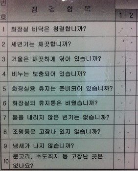

Vocabulary
Nouns:
소식 = news
Common Usages:
소식을 듣다 = to hear news
좋은 소식 = good news
나쁜 소식 = bad news
Notes: This word does not mean the “news” that you see on TV. Rather, it is the word to describe a piece of information, that we often call “news” in English.
Example:
나쁜 소식이 있어요 = There is some bad news
좋은 소식을 들었어요? = Did you hear the good news?
저는 그 소식을 듣고 충격을 받았어요 = I was shocked when I heard the news
우리 딸이 애기를 낳을 거라는 소식을 들었을 때 저는 기쁨에 취했어요
= I was filled with joy when I heard the news that my daughter will be having a baby
엄마 = mom
Notes: This is a shortened form of the word “어머니”
Example:
엄마도 올 거야? = Will mom come too?
저의 엄마는 고양이가 있어요 = Mom has a cat
엄마는 우리를 위해 점심을 집에서 만들 거예요 = Mom will make lunch for us at home
아들은 엄마를 위해 박스를 들었어요 = The son carried the box for his mother
저는 엄마랑 밥을 먹으러 갔어요 = I went to go eat with (my) mom
제가 어렸을 때는 엄마가 매일 도시락을 싸 줬어요 = When I was young, my mom packed a lunch box for me everyday
아빠 = dad
Notes: This is a shortened form of the word “아버지”
Example:
우리 아빠가 최고예요 = Our/my dad is the best!
저는 아빠의 죽음을 잊지 않았어요 = I didn’t forget the death of my father
우리 아빠는 저것을 싫어할 것 같아 = Dad will probably not like that
아빠가 돈을 이미 냈을 것 같아요 = Dad probably already paid
아빠가 낚시하러 갔어요? = Did dad go fishing?
애기를 보자마자 아빠는 애기를 안기 위해 팔을 벌렸어요
= The father opened up his arms to hug the baby as soon as he saw it
결혼식 = wedding
Common Usages:
결혼식을 치르다 = to hold a wedding ceremony
결혼식을 하다 = to hold a wedding ceremony
Notes: Usually, by adding 식 to the end of a noun in Korean, the noun turns into some sort of a ceremony. 결혼 + 식 = marriage ceremony (wedding).
Examples:
결혼식은 언제예요? = When is the wedding?
저는 그들에게 결혼식에 갈 거냐고 물어봤어요 = I asked if they were going to the wedding
저는 한국의 형식적인 결혼식을 별로 좋아하지 않아요 = I don’t really like Korean style weddings
우리는 결혼식의 날짜를 아직 안 정했어요 = We still haven’t set a date for the wedding
우리가 한국 전통 결혼식을 할 거예요 = We will have a traditional Korean wedding
우표 = postage stamp
Common Usages:
편지에 우표를 붙이다 = to put a stamp on a letter
우표를 모으다/수집하다 = to collect stamps
Example:
저는 어렸을 때부터 우표를 모았어요 = I have collected stamps ever since I was young
신 = god
Common Usages:
식신 = eating god – somebody who eats a lot
신을 믿다 = to believe in god
Example:
옛날에 그리스인들은 여러 가지의 신을 믿었어요 = A long time ago, Greek people believed in a variety of gods
만화 = comics, cartoons
Common Usages:
만화책 = comic book
만화영화 = animated movie
Example:
아이들은 만화영화를 매우 좋아해요 = Children really like animated movies
그 만화책은 성인들에게 인기가 많아요 = That comic book is popular among adults
만화책 = comic book
Example:
만화책을 좋아합니까? = Do you like comic books?
만화책을 왜 좋아합니까? = Why do you like comic books?
일본에서 성인들은 미국 청소년보다 만화책을 더 많이 읽어요 = In Japan, adults read more comic books than kids do in America
예정 = schedule
Common Usages:
~ㄹ/을 예정 = to be scheduled to do something (see Lesson 50 for more information)
예정 대로 = as scheduled, according to schedule
Example:
우리가 내일 도착할 예정이에요 = We are scheduled to arrive tomorrow
저는 내일의 예정을 바꿨어요 = I changed tomorrow’s schedule
수업이 4시쯤에 시작될 예정이에요 = The class is scheduled to start at about 4:00pm
그녀는 이번 달에 애기를 낳을 예정이에요 = She is scheduled to give birth this month
비행기가 9시에 출발할 예정이지만 눈이 많이 와서 못 출발할 것 같아요
= The plane is scheduled to depart at 9:00, but it probably won’t because it is snowing a lot
우리가 제주도에 내일 갈 예정인데 태풍이 와서 갈 수 있는지 없는지 모르겠어요
= We are scheduled to go to Jeju tomorrow, but because of the typhoon we might not be able to go
오늘 삼성과 두산은 이번 시즌 우승을 위한 마지막 승패를 다툴 예정입니다
= Today, Samsung and Doosan (the sponsoring companies of two baseball teams in Korea) are scheduled to fight/compete (in the last game) for this season’s title
코딱지 = booger, a small amount of something
The pronunciation of this word is closer to “코딱찌”
Common Usages:
코딱지만큼 = an idiom to say something is really small, for example:
아빠가 코딱지만큼 먹었어요 = Dad only ate a little bit!
Example:
코딱지를 먹지 마세요! = Don’t eat your boogers!
아주머니는 저한테 고기를 코딱지만큼 줬어요 = The lady only gave me a small amount of meat
논 = rice paddy
Common Usages:
논을 갈다 = to plow a rice paddy
Example:
한국에서 논이 진짜 예뻐요 = Rice paddies in Korea are really beautiful
낮잠 (자다) = nap
The pronunciation of this word is closer to “낟짬”
Common Usages:
낮잠을 자다 = to take a nap
Examples:
저는 오늘 오후에 낮잠을 잤어요 = I took a nap in the afternoon today
낮잠을 언제 잤어요? = When did you take a nap?
애기들이 다 낮잠 자고 있어요 = All the babies are taking a nap
나는 사자를 보는 게 무서웠지만 어쨌든 우리는 사자가 있는 곳에 도착했다. 하지만 사자는 낮잠을 자고 있었다.
= I was afraid of seeing the lions, but, at any rate, we arrived at the place where the lions were. However, the lions were taking a nap.
의견 = opinion, feedback
Common Usages:
의견을 내다 = to give an opinion
의견을 존중하다 = to respect an opinion
의견을 구하다 = to ask for an opinion
Example:
저는 의견을 말할 기회가 아직 없어요 = I still haven’t had a chance to say my opinion
저의 의견을 설명했지만 그 사람들이 제 말에 동의하지 않았어요
= Even though I explained my opinion, they didn’t agree with what I said
이 의견에 대해 찬성을 하는 사람은 손을 들어 주세요
= People in agreement about this opinion, please raise your hands
Verbs:
사라지다 = to disappear
Common Usages:
자국 없이 사라지다 = to disappear without a trace
걱정이 사라지다 = for worries to disappear
눈앞에서 사라지다 = to disappear in-front of one’s eyes
Example:
어느 겨울 꽃이 다 사라졌다 = Some winter, all the flowers disappeared
부부는 어둠으로 사라졌어요 = The couple disappeared into the darkness
토끼가 어두운 숲으로 사라졌어요 = The rabbit disappeared into the dark forest
저의 돈을 훔치고 범죄자들은 어둠으로 사라졌어요
= The criminals disappeared into the darkness after stealing my money
무대 위에서 노래를 부를 때마다 저의 걱정과 고민은 모두 사라져요
= Whenever I sing on stage all of my worries and fears disappear
지구 기온이 점점 오르면서 한국에서 사계절이 사라진대요
= As the global temperatures gradually increase, they say that the “four seasons” in Korea is disappearing
졸업하다 = to graduate
The pronunciation of this word is closer to “조러파다”
Common Usages:
졸업생 = a graduate
졸업식 = a graduation ceremony
Examples:
졸업을 언제 했어요? = When did you graduate?
어느 대학교를 졸업했어요? = Which university did you graduate from?
저는 10년 전에 서울대학교를 졸업했어요 = I graduated from Seoul University 10 years ago
아들이 대학교를 졸업해서 우리는 축하를 해야 돼요
= Now that our son has graduated from University, we need to congratulate him
캐나다에서는 간호대학을 졸업하자마자 간호사 일자리를 잡을 수 있어요
= In Canada, as soon as you graduate from nursing school/college, you can find a position as a nurse
입원하다 = to check into a hospital
Notes: This often translates to “enter a hospital,” but it actually used to say that one enters a hospital, and then gets admitted. You would not use this word if you enter a hospital to visit somebody or to do some other task there.
Examples:
어제 병원에 입원했나요? = Did you go to/get admitted to the hospital yesterday?
할머니는 어제 아파서 입원했어요
= Grandma checked into the hospital yesterday because she was sick
저희 엄마는 어제 길에서 미끄러져서 병원에 입원했어요
= Yesterday our mom slipped on the road and went got admitted to the hospital
퇴원하다 = to check out of a hospital
Notes: The opposite of 입원하다, this is not used to indicate that you leave a hospital. It is used when somebody has completed their treatment and is okay to leave the hospital.
Example:
언제 퇴원할 수 있어요? = When will you be able to leave the hospital?
이기다 = to win
Notes: In English the words “beat” and “win” are slightly different. However, in Korean, 이기다 is used for both of these words.
Example:
우리는 다른 팀을 농구경기에서 이겼어요 = We beat the other team in the basketball game
우리는 3대 2로 경기를 이겼어요 = We won the game 3 to 2
우리는 좋은 공격으로 그 팀을 이겼어요 = We beat that team using good offense
저는 형이랑 싸움에서 이겼어요 = I won in a fight with my brother
지다 = to lose
Example:
우리는 결국 마지막 경기에서 졌어요 = We ended up losing in the last game
후회하다 = to regret
Common Usages:
후회 없이 = without regrets
행동을 후회하다 = to regret an action
Example:
저는 그것을 말한 것을 후회해요 = I regret saying that
그는 자기 차를 팔고 후회했어요 = He regrets selling his car
타다 = to ride
Common Usages:
버스를 타다 = to get on/ride a bus
전철을 타다 = to get on/ride a subway/train
엘리베이터를 타다 = to get on/ride an elevator
Notes: 타다 is another one of those verbs that has so many meanings depending on the situation. One of the most common meanings, however, is to “ride.” It can be used in a wide variety of situations where you are on something that is moving (boat, horse, taxi, subway, elevator, bus)
저는 서울역에서 버스를 탔어요 = I got on the bus at Seoul station
나는 벌써 지하철을 타고 있어 = I am already riding the subway
급행 열차가 도착하자마자 사람들이 무리하게 탔어요
= As soon as the express train arrived, people got on excessively
임산부가 전철을 탔다가 자리가 없어서 전철에서 내렸어요
= The pregnant woman got on the subway, and because there was no seat, she got off
이 놀이기구를 타고 싶은데 키 제한이 있어서 저는 못 탔어요
= I wanted to go on that ride, but because there was a height restriction, I couldn’t ride it
Adjectives:
즐겁다 = to be pleasant
The pronunciation of this word is closer to “즐겁따”
즐겁다 follows the ㅂ irregular
Common Usages:
즐겁게 = pleasantly
Examples:
날씨가 좋아서 산책하는 것은 즐거워요 = It is pleasant go to for a walk because the weather is so nice
고등학교 때는 같이 있는 것이 재미있었고 학교 가는 게 즐거웠었는데! 여전히 친구를 만나니 즐겁고 행복하다. 같은 추억을 가지고 있는 친구와 여전히 친구라는 사실이 이렇게 좋은 줄은 몰랐다.
= It was very fun being together during high school time, and I enjoyed going to school (High school was very fun). I am happy and enjoying myself because I am still meeting my friends. I didn’t know it was so good/nice to still have friends with whom I have the same (childhood) memories with (I am glad that I can still meet old friends with whom I share childhood memories with).
부족하다 = to not be enough, to be lacking
Common Usages:
돈이 부족하다 = to be short of money
시간이 부족하다 = to be short on time
Examples:
그 사람의 말은 항상 진실성이 부족해요 = That person’s words always lack sincerity
그 사람은 참을성이 부족해서 못 기다렸어요 = That person is not patient (lacks patience), so he could not wait
밧줄의 길이가 너무 부족하다고 했어요 = I said that the length of this rope is not enough (insufficient)
시간이 부족해서 모든 내용을 가르칠 수 없어요
= I can’t teach all the material because there is a lack of time
돈이 부족해서 그것을 살 수 있는지 없는지 모르겠어요
= I don’t know if I can buy that or not because I don’t have enough money
시간이 부족해서 우리는 계획을 변경해 야 돼요
= We need to change the plans because of the lack of time
삼성이 이 축제를 후원해서 돈이 부족할 리가 없어요
= Samsung is sponsoring this event, so there is no way money can run out
간단하다 = to be simple
Common Usages:
간단히, 간단하게 = simply
Examples:
저는 학생들한테 그것을 간단히 설명했어요 = I explained it simply to the students
한번 머리를 염색해 보니까 염색이 생각만큼 간단하지 않다는 걸 알게 됐다
= Now that I have tried/attempted to dye my hair, I realize/can assert that doing so is not as simple as one thinks
Adverbs and Other Words:
누구 = who
Notes: When used as the subject of a sentence, 누구 changes to 누가
너는 내일 한국어를 공부할 거야 = You will study Korean tomorrow
너는 내일 한국어를 공부할 거야? = Will you study Korean tomorrow?
누가 내일 한국어를 공부할 거야? = Who will study Korean tomorrow?
왜 = why
Example:
만화책을 왜 좋아합니까? = Why do you like comic books?
한국어를 왜 공부하고 있어요? = Why are you studying Korean?
왜 너무 빨리 먹었어요? = Why did you eat so fast?
어제 학교에 왜 안 갔어요? = Why didn’t you go to school yesterday?
언제 = when
As an adverb, 언제 can be used to ask “when” something happens. For example:
집에 언제 갔어? = When did you go home?
집에 언제 갈 거야? = When will you go home?
그 여자가 언제 사라졌어요? = When did that girl disappear?
낮잠을 언제 잤어요? = When did you take a nap?
아빠가 언제 왔나요? = When did dad come?
Particles like ~부터 and ~까지, which are often used to indicate from/until when something happens can be attached to 언제 to indicate that it is unknown “from/until when” something happens. For example:
언제부터 아팠어요? = Since when have you been sick?
한국에서 언제까지 있을 거예요? = Until when will you be in Korea?
언제부터 한국어를 공부했어요? = Since when have you been studying Korean?
언제 can also be attached to “이다” to ask “when” something is. In these cases as well, it replaces the noun that would normally be attached to 이다. For example:
결혼식은 언제야? = When is the wedding?
방학은 언제야? = When is vacation?
This word appears in my Korean Sign Explanation Video 5.
어디 = where
어디 can be used to ask “where” something happened if the place is unknown. For example:
어디 가고 싶어요? = Where do you want to go?
어디 살아요? = Where do you live?
그것을 어디서 하고 싶어요? = Where do you want to do that?
어디에서 왔어요? = Where are you from (from where did you come?)
The particle ~까지 is commonly attached to 어디. ~부터 is not commonly attached to 어디 for the same reason that ~부터 is not commonly attached to a place, as described in Lesson 12. For example:
어디까지 가고 싶어요? = How far/until where do you want to go?
지하철을 어디까지 탈 거예요? = Until where will we ride the subway?
Like 언제, it can also be used as the noun before 이다 to ask where something “is.” For example:
어디야? = Where are you?
This is really only done when speaking to a person, and you are asking him/her directly where he/she is. When asking where another person, or another thing is, it is more natural to use 있다 in the sentence. For example:
친구가 어디에 있어요? = Where is your friend?
엄마가 어디에 있어요? = Where is mom?
펜이 어디에 있어요? = Where is the pen?
This word appears in my Korean Sign Explanation Video 5.
역시 = also
The pronunciation of this word is closer to “역씨”
Notes: Similar to the particle ~도. However, 역시 does not get added directly to nouns.
역시 also gets placed as an adverb in sentences for feeling when the speaker says something that is “as expected.”
나 역시 수학을 좋아하지 않아 = I also don’t like math
몇몇 = some
The pronunciation of this word is closer to “면멷”
Common Usages:
몇몇 사람 = some people
몇몇 학생 = some students
Notes: Usually placed before a word meaning “people” to mean “some ____”
Example:
몇몇 사람들은 밥을 좋아하지 않아 = Some people don’t like rice
벌써 = already
벌써 can be used to indicate that one action has “already” happened. These actions are usually finished when then speaker uses “벌써.” For example:
저는 그 사실을 벌써 알고 있었어요 = I already knew that fact
내가 밥을 벌써 먹어서 지금 먹고 싶지 않아 = Because I already ate, I don’t want to eat now
It can also be used to indicate that an action happens earlier than expected. These actions don’t have to be finished for the speaker to use 벌써. For example:
벌써 나갈 거야? = You are already leaving?
학교가 벌써 끝났어요? = School is already finished?
이미 = already
이미 can replace 벌써 in the first usage described above, but not the second one. That is, it can be used to indicate that one action has “already” happened. For example:
저는 그 사실을 이미 알고 있었어요 = I already knew that fact
내가 밥을 이미 먹어서 지금 먹고 싶지 않아 = Because I already ate, I don’t want to eat now
저는 이미 여자 친구가 있어요 = I already have a girlfriend
아빠가 돈을 이미 낸 것 같아요 = It seems like dad already paid
부장님이 그 일을 이미 다 한 것 같아요 = It seems like the boss already did all that work
특히 = especially, particularly
Example:
학생들은 그 선생님을 특히 좋아해요 = Students especially like that teacher
저는 특히 오른발이 왼발보다 커서 신발을 살 때 불편해요
= My right foot is particularly larger than my left foot, so it is hard for me to buy shoes
하지만 시간이 흐르면서 나는 점점 더 외로움을 느꼈다. 특히 친하게 지냈던 친구들이 각 자 자기 나라로 돌아가기 시작하자 더 외로움을 느꼈다.
= But, as time when by, I gradually started to feel lonely. Especially as/when each of my close friends started to go back to their own countries, I felt lonelier.
특히 내가 가장 좋아한 선물은 바로 분홍색 인형이었다. 그 인형은 너무 귀엽고 색깔도 예뻤다. 우리는 생일 축하 노래를 부르고, 선물을 교환하고 맛있는 음식을 먹었다.
= My particularly favorite present of all was the pink doll. That doll was very cute and the color was pretty. We sang ‘happy birthday,’ exchanged presents and then ate delicious food.
점점 = gradually
Common Usages:
점점 나빠지다 = to gradually get worse
점점 좋아지다 = to gradually get better
점점 추워지다 = to gradually get colder
Example:
요즘에 날씨가 점점 추워져요 = Lately, the weather is getting gradually colder
중학생들의 치마는 점점 짧아지고 있어요 = Middle school students’ skirts are getting shorter and shorter
Asking Questions in Korean
Asking questions in Korean, at first glance, is very easy. For the most part, asking questions in Korean without the use of a “question” word (who/what/when/where/why/how/how much/how many) is incredibly simple.
Asking questions in English is unnecessarily complicated. If I asked you the question “Do you like sports?” In English, what is the meaning of the word “do” in that sentence? In English, whenever we ask a question (without a question word), we need to include the words did/do/will to make the listener know that we are asking a question.
Did you go to the park?
Do you like sports?
Will you eat with us?
It is so confusing in English, and my two sentence explanation doesn’t really explain it very well. Luckily, this is not an English learning website! You are here to learn how to ask questions in Korean. Enough of this English nonsense.
In Korean, if you are asking a question that does not require the use of a question word (one more time: who/what/when/where/why/how/how much/how many) you don’t need to do anything structurally to make that sentence a question. All you need to do is raise the intonation of the end of the sentence to make it sound like a question. For example, if you want to say “My mother ate” you already know that you can say:
엄마는 먹었어요 = My mom ate
But if you want to ask somebody “did you eat?” You just raise the intonation of the end of the sentence to make it sound like a question:
엄마는 먹었어요? = (literally means “did mom eat?”)
Remember that Korean people rarely say the word “you,” so if you ask a question to the person you are talking to about the person you are talking to, you can just omit the subject of the sentence.
밥을 먹었어? = Did (you) eat?
집에 갔어? = Did (you) go home?
소식을 들었어? = Did (you) hear the news?
If you are talking to somebody and the subject of the sentence is not the person who you are talking to, you can just use the subject as normal. Also notice that regardless of the tense of the sentence (past/present/future) you don’t need to do anything special other than raise the intonation at the end of the sentence:
남동생은 울었어요? = Did your brother cry?
한국은 좋은 나라야? = Is Korea a good country?
엄마도 올 거야? = Will mom come too?
As I said, you don’t need to change anything structurally in these sentences to make them questions. There are, however, a few ways that you can change the structure of a sentence to make the sentence a question (if you want).
Korean Questions ~ㅂ/습니까
The formal high respect ~습니다 is never used as a question. When asking a question in this form, instead of using ~습니다 you must use ~ㅂ/습니까. ~ㅂ니까 gets added directly to stems ending in a vowel, and ~습니까 gets added after a stem ending in a consonant. You can do this with all tenses:
방학 동안 집에 안 갔습니까? = You didn’t go home during vacation?
그 사람을 만나고 싶습니까? = Do you want to meet that person?
내일 학교에 갈 겁니까? = Are you going to school tomorrow?
내일 학교에 갈 것입니까? = Are you going to school tomorrow?
I work at a school in Seoul. In the bathrooms, there are charts on the walls that the cleaning staff is supposed to check once per day. Written on these charts is a list of questions about the state of the bathroom.
While you will not understand most of the words on this list, notice that all of the sentences (except for the last one) has the ending ~ㅂ/습니까?

Some of the words provided in the 10 sentences above are fairly difficult. However, I would like to translate it for you:- Is the bathroom floor clean?
- Is the sink clean?
- Has the mirror been wiped clean?
- Is there extra soap?
- Is the toilet paper ready?
- Is the bathroom’s garbage can empty?
- Are there no toilets that haven’t been flushed?
- Are any lights broken?
- Is there any smell?
- Are there any places, the doorknob, the faucet, etc that are broken?
There are other ways you can change a sentence to make it a question. ~ㅂ/습니까 is typically the most formal. We will talk about the others in the upcoming sections.
Korean Questions ~니
When asking a question, instead of ending your sentences with ~아/어, you can end them with ~니. This is an informal way to ask a question, and you can do this in all tenses. For example:
Past tense: 했니, 먹었니, 갔니, 이었니
Present tense: 하니, 먹니, 가니, 이니
Future tense (~겠): 하겠니, 먹겠니, 가겠니
Future tense (~ㄹ 것이다): 할 거니, 할 것이니, 먹을 거니, 먹을 것이니
However, note that using this form gives the sentence a slightly feminine feel to it (I’ve never once used ~니). However, I work at a Korean high school, and I hear female Korean teachers use this form all the time when asking questions to a student.
시험을 잘 봤니? = Did you write the exam well (did you do well on the exam)?
서울에 가겠니? = Are you going to go to Seoul?
몇 반이니? = What class are you in?
이미 졸업했니? = Did you already graduate?
—————–
In Lesson 7, you learned how irregular words change as a result of adding different additions. This is the first time you have been introduced to adding ~니.
The ㄹ irregular applies when adding ~니. When you add ~니 to a stem of a word that ends in ㄹ, you must drop the ㄹ from the stem, and attach the grammatical principle to the remainder of the word. For example:
열다 + ~니 = 여니
As you know, some additions require the speaker to choose between two possible options – for example, choosing between ~아 and ~어 when adding ~아/어. Notice that when adding ~니 there is no choice. I call this a “solid ㄴ.” That is, there is only one choice, and it starts with ㄴ.
In later lessons, you will learn other grammatical additions that have a solid ㄴ. For example:
~나 (later in this lesson)
~는 (Lesson 26)
~는데 (Lesson 76)
~네 (Lesson 83)
~나 (Lesson 109)
All grammatical additions where a solid ㄴ is attached to a word follow the same rule as when ~니 is added. Below are some examples of ~니 in use with the ㄹ irregular:
뭐 만드니? = What are you making?
마음에 드니? = Do you like it?
어디 사니? = Where do you live?
~니 also affects the ㅎ irregular, which is introduced in Lesson 23.
Korean Questions ~ㄴ/은가(요)
Just like ‘~니’ you can also end your questions with ~ㄴ/은가(요). Adding “요” to the end makes it more formal. This form is less formal than the high-respect ~ㅂ/습니까 form.
~ㄴ/은가(요) gets added to the stem of adjectives. Using this form makes a question a little bit softer than using the forms described previously. The exact difference cannot be translated perfectly, but sort of like how “would it be okay if I go into the park?” sounds slightly softer than “can I go into the park.”
You add ~ㄴ/은 to adjective stems just like you would when conjugating it to describe a noun:
예쁘다 + ㄴ/은 = 예쁜
작다 + ㄴ/은 = 작은
And then attach “가(요)” after that construction:
예쁜가(요)?
작은가(요)?
It is only conjugated into the present tense and therefore usually only used to ask about some sort of present situation. For example:
그 여자는 예쁜가? = Is that girl pretty?
이것은 너무 작은가요? = Is this too small?
그 학교가 좋은가? = Is that school good?
일이 너무 복잡한가요? = Is this work/task too complicated?
~ㄴ/은가(요) is commonly added to 이다 as well. For example:
그 사람이 선생님인가? = Is that person a teacher?
그 사람이 우리 엄마인가? = Is that person our mom? (Is that our mom?)
아닌가(요)? Is very commonly used at the end of a full sentence to say “no?” when you are asking yourself a question as if you are doubting yourself. For example:
그 여자는 한국에서 가장 예쁜 여자야. 아닌가? = That girl is the most beautiful girl in Korea… no?/isn’t she?
너무 복잡해! 아닌가? = This is too complicated. Isn’t it?
Korean Questions ~나(요)
Using ~나(요) at the end of a sentence to ask a question has the same function of ~ㄴ/은가(요). That is, it can be used to make a question sound slightly softer than the other ways to ask a question. However, ~나(요) is more often used with verbs and with 있다 and 없다. For example:
Notice that the ㄹ irregular needs to be applied in appropriate situations again:
밥이 있나? = Is there rice?
사과도 여기서 파나요? = Do you sell apples here too?
소녀시대 콘서트를 여기서 하나요? = Is the Girl’s Generation concert here?
지하철을 타고 있나요? = Are you on (riding) the subway now?
This form can be used in the past tense as well. For example:
교통카드가 있었나요? = Did you have your bus (transportation) card?
그 소식을 들었나요? = Did you hear that/the news?
만화책을 샀나요? = Did you buy the comic book?
어제 병원에 입원했나요? = Did you go to the hospital yesterday?
It is possible to use this in the future tense, but it only sounds natural when applying it to the ~겠다 future conjugation. Adding ~나(요) to 이다 is typically not done, and therefore adding it to words that are conjugating using ~ㄹ/을 것이다 is unnatural. For example:
내일 퇴원할 거나요? – unnatural
내일 퇴원할 것이나요? – unnatural
Using Question Words
Depending on which question word you are using, building a question can be really easy or really confusing. I will teach you the easy examples in this lesson (who, when, where, why) and the more confusing examples in the next lesson (what, how, how much/how many).
Why (왜)
Why (왜) is probably the easiest question word in Korean. ‘왜’ is an adverb, which means it can be used/placed as an adverb in sentences. Many of the question words that you will learn in this lesson (and the following lesson) are adverbs. As you know, adverbs can be used very freely in sentences and do not have any specific location that they need to be used. However, the most common position for these adverb-question words is before the verb. If there are other adverbs in the sentence (including the negative “안”) the question word is usually placed first.
With these adverb-question words, you can typically just take a statement and change it into a question by inserting the word into the sentence. For example:
만화책을 좋아합니까? = Do you like comic books?
만화책을 왜 좋아합니까? = Why do you like comic books?
(저는) 한국어를 공부하고 있어요 = I am studying Korean
한국어를 왜 공부하고 있어요? = Why are you studying Korean?
(저는) 너무 빨리 먹었어요 = I ate really fast
왜 너무 빨리 먹었어요? = Why did you eat so fast?
(저는) 어제 학교에 안 갔어요 = I didn’t go to school yesterday
어제 학교에 왜 안 갔어요? = Why didn’t you go to school yesterday?
왜 is also used to respond when somebody calls your name (because they want you for some reason). In English, we would say “what,” but in Korean, they say “왜.” For example:
Person 1: 슬기야! = Seulgi!
Person 2: 왜? = Why/what do you want?
Notice that saying “why” in English is unnatural. This is how they say it in Korean.
When (언제)
The usage of ‘when’ (언제) is very similar to the usage of ‘왜’ in Korean. As an adverb, it can be used to ask “when” something happens. For example:
집에 갔어? = Did you go home?
집에 언제 갔어? = When did you go home?
집에 갈 거야? = Will you go home?
집에 언제 갈 거야? = When will you go home?
그 여자가 사라졌어요 = That girl disappeared
그 여자가 언제 사라졌어요? = When did that girl disappear?
낮잠을 잤어요? = Did you take a nap?
낮잠을 언제 잤어요? = When did you take a nap?
아빠가 왔어요? = Did dad come?
아빠가 언제 왔나요? = When did dad come?
Particles like ~부터 and ~까지, which are often used to indicate from/until when something happens can be attached to 언제 to indicate that it is unknown “from/until when” something happens. For example:
어제부터 아팠어요 = I have been sick since yesterday
언제부터 아팠어요? = Since when have you been sick?
Notice that 어제 and 언제 are not the same word.
한국에서 내년까지 있을 거예요 = I will be in Korea until next year
한국에서 언제까지 있을 거예요? = Until when will you be in Korea?
작년부터 한국어를 공부했어요 = I have been studying Korean since last year
언제부터 한국어를 공부했어요? = Since when have you been studying Korean?
언제 can also be attached to “이다” to ask “when” something is. In these cases as well, it replaces the noun that would normally be attached to 이다. For example:
결혼식은 내일이야 = The wedding is tomorrow
결혼식은 언제야? = When is the wedding?
방학은 다음 주야 = Vacation is next week
방학은 언제야? = When is vacation?
The grammatical principle ~든지 is commonly attached to 언제 to form 언제든지. For now, you can think of this simply as a word that means “whenever.” When you learn about the function of ~든지 in Lesson 106, you will understand how this meaning is formed.
Where (어디)
어디 works very much like 언제. It can be used to ask “where” something happened if the place is unknown. For example:
집에 가고 싶어요 = I want to go home
어디 가고 싶어요? = Where do you want to go?
한국에 살아요 = I live in Korea
어디 살아요? = Where do you live?
Just like 여기, ~에 is often omitted from “어디.” 어디에서 is often contracted to 어디서.
More examples:
그것을 집에서 하고 싶어요 = I want to do that at home
그것을 어디서 하고 싶어요? = Where do you want to do that?
한국에서 왔어요 = I came from Korea
어디에서 왔어요? = Where are you from (from where did you come?)
The particle ~까지 is commonly attached to 어디. ~부터 is not commonly attached to 어디 for the same reason that ~부터 is not commonly attached to a place, as described in Lesson 12. For example:
부산까지 가고 싶어요 = I want to go until Busan
어디까지 가고 싶어요? = How far/until where do you want to go?
지하철을 서울역까지 탈 거예요 = We will take/ride the Subway until Seoul Station
지하철을 어디까지 탈 거예요? = Until where will we ride the subway?
Like 언제, it can be used as the noun before 이다 to ask where something “is.”
Placing 어디 before 이다 is really only done if asking somebody directly where they are:
어디야? = Where are you?
Or when asking where a place is:
너의 집이 어디야? = Where is your house?
그곳이 어디야? = Where is that place?
학교가 어디예요? = Where is the/your school?
When asking where another person, or an object is, it is more natural to use 있다 in these sentence. For example:
친구가 어디에 있어요? = Where is your friend?
엄마가 어디에 있어요? = Where is mom?
펜이 어디에 있어요? = Where is the pen?
아빠가 어디에 있어? = Where is dad?
그 만화책이 어디에 있어? = Where is that comic?
These would be unnatural:
아빠가 어디야?
그 만화책이 어디야?
Just like 언제, there are of course more complicated ways that 어디 can be used. For now, this is good enough.
Who (누구)
In Korean, 누구 has the function of a pronoun.
Actually, some of the ways you use 언제 and 어디 in Korean are pronouns. I chose not to explain this to you because the definition of a pronoun in Korean and English is not exactly the same. 언제 and 어디 can act as pronouns in Korean, but this same usage would be called an adverb in English. I actually had an explanation typed out, but decided not to include it into this lesson because it makes things more confusing than they actually are. However, knowing that 누구 is a pronoun in English and Korean is helpful (if you know what pronouns are).
As a pronoun, 누구 can be used in the place of a noun in a sentence – that is, it can be used to replace the object, the subject or as a noun before 이다.
This is the same in English – as you can see in the following three examples:
Who will study Korean tomorrow? – ‘who’ is the subject of the sentence
Who will you meet tomorrow? – ‘who’ is the object of the sentence -“you” is the subject
Who is that person? = ‘who’ is ‘that person’ in the sentence
However, this is confusing in English because in all three cases “who” is the first word of the sentence regardless of its role.
In Korean, instead of always placing ‘who’ at the start of the sentence, it should be placed in the location of the subject (usually the start of the sentence), the object (usually somewhere in the middle of the sentence) or before 이다. I will show you an example of each:
In the third sentence below you can see an example of 누구 being used as a subject. The subject is underlined in each case. When 누구 is used as the subject of a sentence, it is changed to 누가.
너는 내일 한국어를 공부할 거야 = You will study Korean tomorrow
너는 내일 한국어를 공부할 거야? = Will you study Korean tomorrow?
누가 내일 한국어를 공부할 거야? = Who will study Korean tomorrow?
In the third sentence below you can see an example of 누구 being used as an object. The object is underlined in each case. The object particles can be used if 누구 is the object.
너는 내일 친구를 만날 거야 = You will meet a friend tomorrow
너는 내일 친구를 만날 거야? = Will you meet a friend tomorrow?
너는 내일 누구(를) 만날 거야? = Who will you meet tomorrow?
In the third sentence below you can see an example of 누구 being used before 이다:
그 사람은 너의 아버지야 = That person is your dad
그 사람은 너의 아버지야? = Is that person your dad?
그 사람은 누구야? = Who is that person?